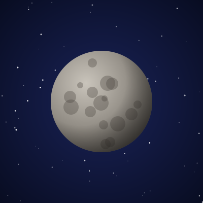
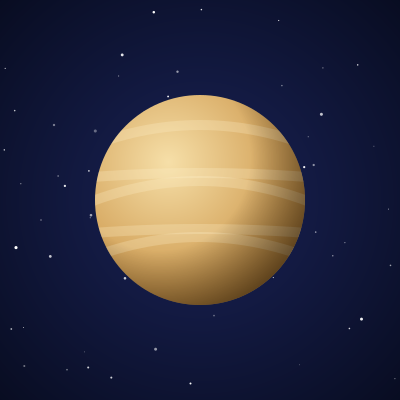
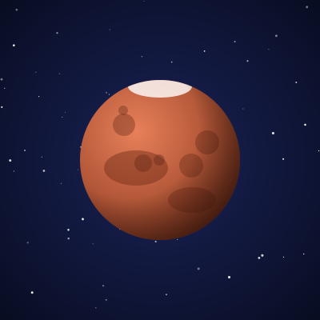
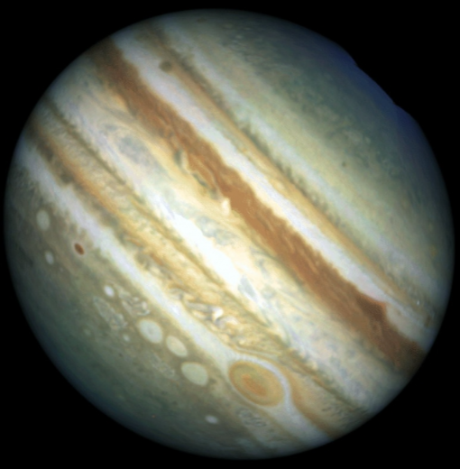
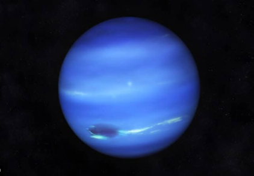

חמה
הקרוב ביותר לשמש, ולכן קשה לראות אותו: רק סמוך לשקיעה או לזריחה.
- מרחק מהשמש
- 58 מיליון ק"מ
- שנה
- 88 ימים
- ירחים
- אין
- צפייה
- בעין, בקושי
Touch the Sky
שישה כוכבי לכת שאפשר לפגוש אצלנו בלילות התצפית. חלקם נראים בעין בלתי מזוינת, ולחלקם צריך טלסקופ.

הקרוב ביותר לשמש, ולכן קשה לראות אותו: רק סמוך לשקיעה או לזריחה.

הכוכב הבוהק ביותר בשמיים אחרי השמש והירח, עטוף בעננים סמיכים.

הכוכב האדום. בטלסקופ אפשר להבחין בכיפת הקרח הקוטבית.

ענק הגזים. כבר בטלסקופ קטן רואים את הפסים שלו ואת ארבעת הירחים הגדולים.

המראה האהוב על הצופים: הטבעות נחשפות בטלסקופ ומשאירות רושם בלתי נשכח.

הרחוק ביותר. נראה כנקודה כחלחלה קטנה, ורק בטלסקופ.